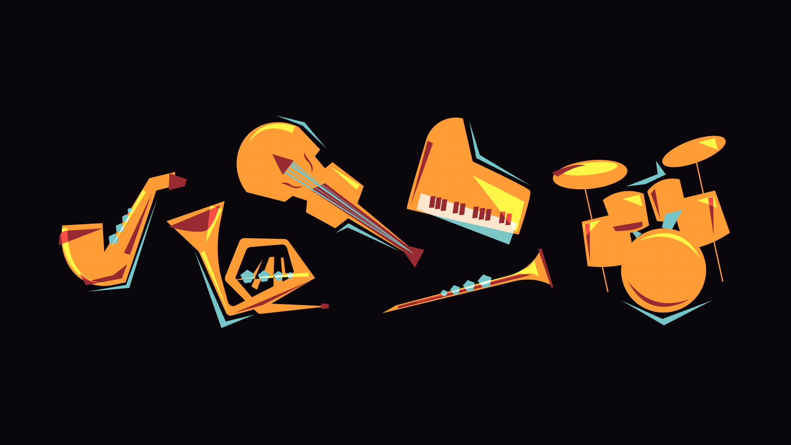
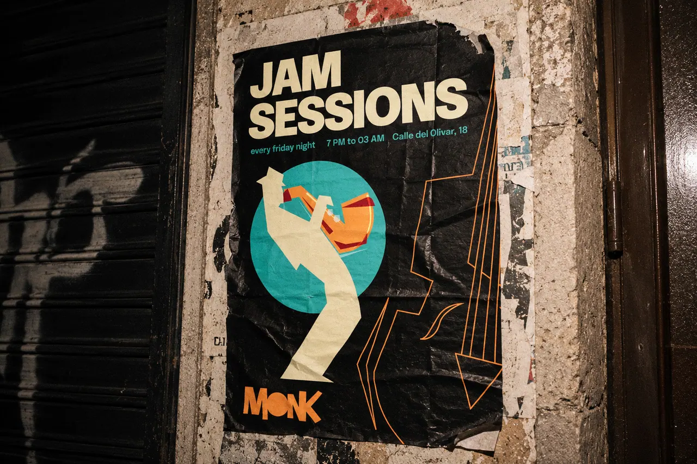
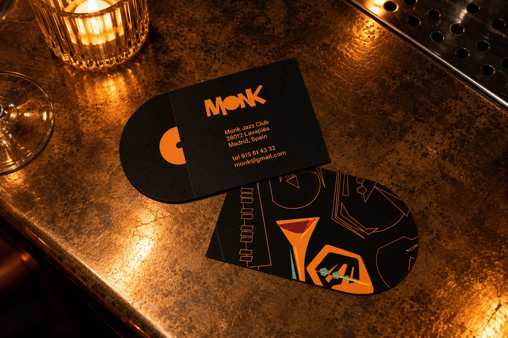
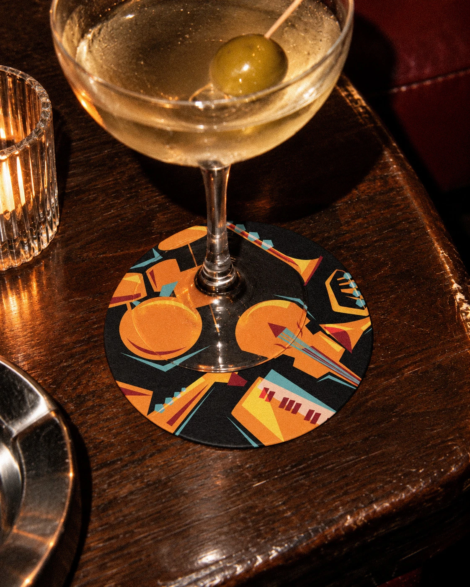
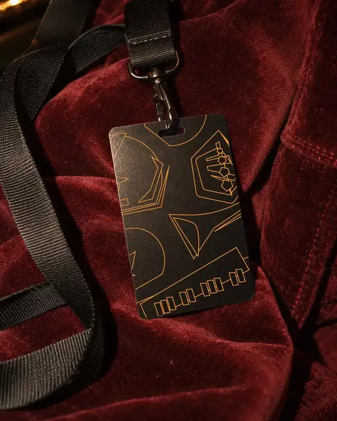
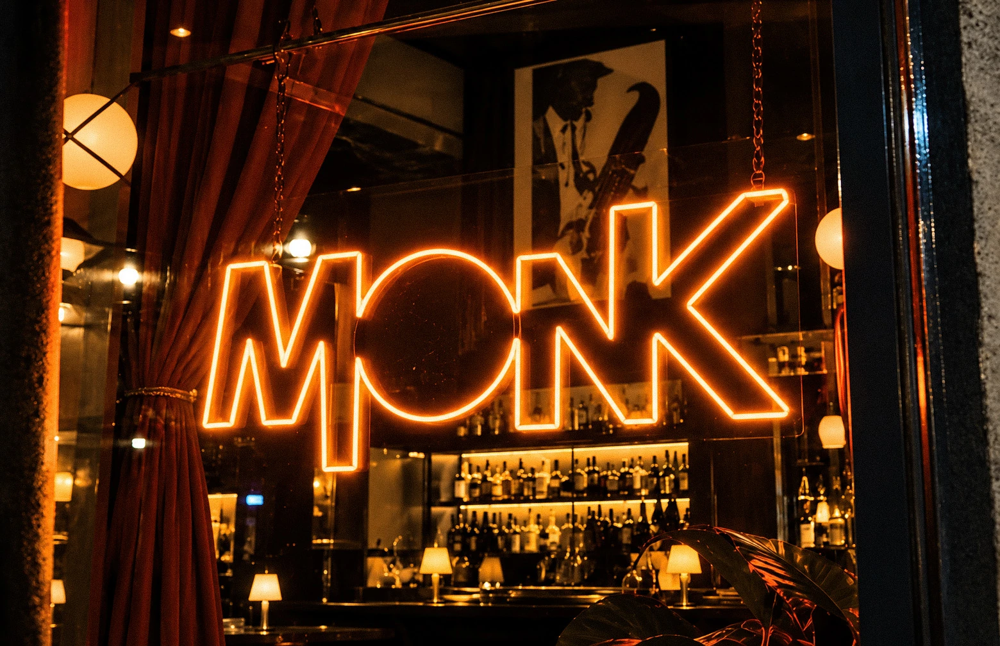
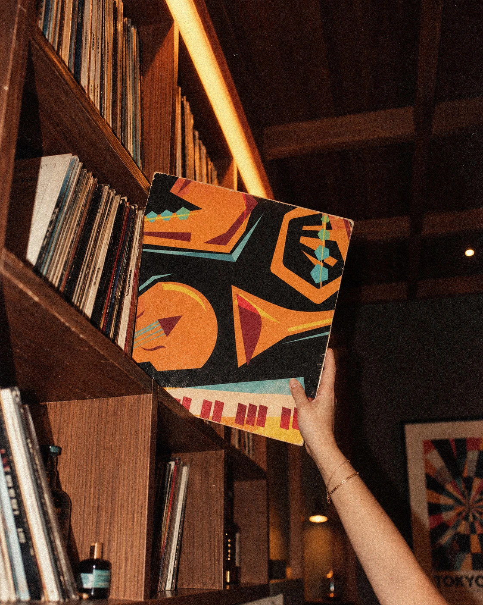
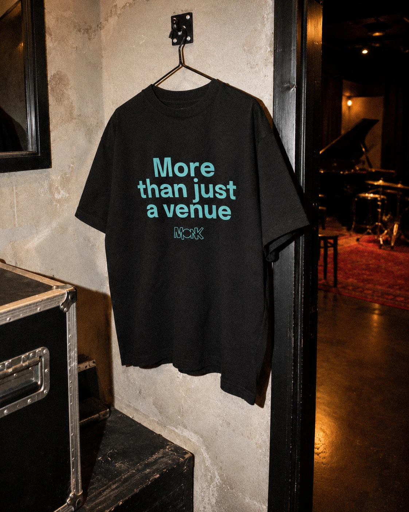

MONK
05 / 05Brand identity / Illustration · 2024
- Visual identity
- Illustration
- Art direction
- Graphic applications
Credits
Ana Clemente, Kaja Dolgov, Martín Domingo and Rosa Damen
THE CHALLENGE
MONK is the visual identity of an imagined jazz club in Lavapiés, Madrid. Designed to bring different generations together through live music, it combines the warmth of traditional jazz spaces with a contemporary, playful attitude.
The challenge was to build a distinctive visual language that could move naturally between the club’s atmosphere, printed pieces and digital communication.



THE PROCESS
The identity is driven by bold geometry, expressive lettering and a set of original illustrations inspired by instruments, musicians and cocktails. These elements convey the rhythm and improvisation of jazz while keeping the graphic system recognisable.
This began as a collaborative project: I created the illustrations and contributed to the visual identity, then produced the mockups and portfolio images shown here at a later stage.





THE OUTCOME
The result is a versatile visual system applied to posters, business cards, drinks menus, coasters, staff passes, merchandise, vinyl artwork and digital touchpoints.
Contrasting colours and playful illustrated details give each piece its own character while creating a recognisable identity that captures the energy of a contemporary jazz club.










